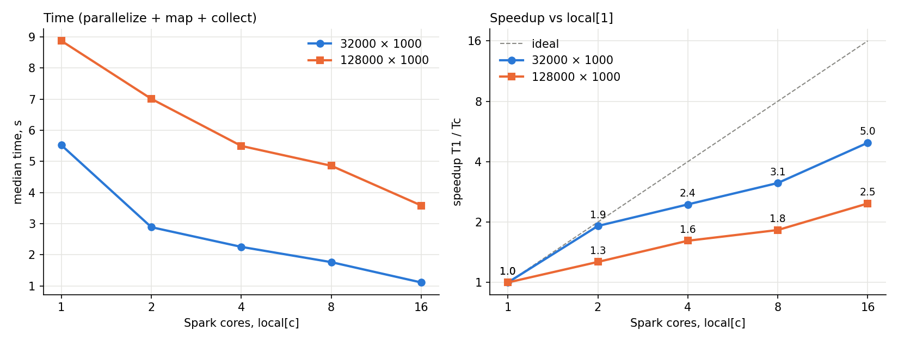

| Local | WSL Ubuntu 26.04, OpenJDK 17.0.21, Python 3.14, pyspark 4.3.0, numpy 2.5 in a virtualenv. Scripts run with spark-submit in local mode |
| Cluster | UT HPC rocket, SLURM 25.11.7. Modules python/3.9.12, py-virtualenv/20.22.0, openjdk/17.0.3_7, virtualenv sparkenv2 with pyspark 4.2.1 and numpy 2.2.6 |
apache/spark-py container. Spark in local mode needs only Java and the pyspark pip package, which already contains Spark. WSL gives the same Linux environment as the container without a 1 GB image, and the same scripts run unchanged on rocket.openjdk/17.0.3_7 reloads python/3.9.12 as python/3.10.10, as the module system reports at the top of every .out file. The virtualenv was therefore created with Python 3.10.10. This does not affect the results.setup_env.sbatch) creates sparkenv2 once. The five measurement jobs start with --dependency=afterok on it, so they never run five pip installs in the same folder at the same time.| File | Content |
|---|---|
pi.py, output_pi.txt | 12.1: Spark example and its output |
sparkMatVecMult.py | 12.2 / 12.3: matrix-vector multiplication, arguments rows columns partitions [repeats] [check] |
output_12_2.txt | 12.2: local runs with validation (10 × 10 and 32000 × 1000) |
sparkjob.sbatch, setup_env.sbatch, submit_all.sh | 12.3: SLURM job script, setup job, script that submits all jobs |
cluster/sparkjob-*.out, cluster/setup-*.out | 12.3: outputs of the rocket jobs |
task12_3_plot.py, summary_12_3.csv, speedup_12_3.png | 12.3: parses the .out files, speedup table and plot |
sparkBankAccounts.py, Unclaimed_bank_accounts.csv | 12.4: script and dataset |
output_12_4.txt | 12.4: full output for year 1993 |
sparkMatMatMult.py, output_bonus.txt | Bonus: matrix-matrix multiplication with BlockMatrix |
spark-submit pi.py 10 with 10 partitions (1 000 000 random points):
Pi is roughly 3.136200
The RDD contains the rows of $A$ as NumPy vectors. One map() turns every row into $b_i = A_i \cdot x$, and collect() returns $b$ in row order:
def multiply(sc, A, x, partitions):
Aspark = sc.parallelize(A, partitions)
b = Aspark.map(lambda row: float(np.dot(row, x)))
return np.array(b.collect())
sc.broadcast would send it once per executor instead.sparkMatVecMult.py rows columns partitions [repeats] [check]. With check, the result is compared with np.matmul(A, x) using np.testing.assert_allclose. The random generator has a fixed seed (12), so every run, local or on rocket, uses the same matrix.parallelize to the end of collect(), because Spark evaluates lazily.$ spark-submit sparkMatVecMult.py 10 10 2 1 check run 1: Time taken: 1.2000 rows=10 cols=10 partitions=2 master=local[*] defaultParallelism=14 b = [2.47934988 1.03260663 2.81487644 2.57446166 2.13123836 2.45694991 2.53934487 2.26322042 1.98438695 2.10711534] check OK: result matches np.matmul(A, x) $ spark-submit sparkMatVecMult.py 32000 1000 100 1 check rows=32000 cols=1000 partitions=100 master=local[*] defaultParallelism=14 b (first 5 of 32000) = [246.60357112 254.06023784 242.52912311 251.30994155 256.61833912] check OK: result matches np.matmul(A, x)
sparkjob.sbatch is the template from the assignment with these changes:
cores is taken from SLURM_CPUS_PER_TASK, so local[cores] always matches the allocation;OMP/OPENBLAS/MKL_NUM_THREADS=1, so NumPy does not start its own threads and all parallelism comes from Spark;--driver-memory 8000M for the larger matrix;submit_all.sh submits one job per core count, 1, 2, 4, 8 and 16 (--cpus-per-task). Each job runs two matrix sizes, 32000 × 1000 (as in the template) and 128000 × 1000, with 100 partitions and 3 repetitions. The table reports the median of the 3 runs.
| Cores | Node (CPU) | Job | 32000 × 1000, s | speedup | 128000 × 1000, s | speedup |
|---|---|---|---|---|---|---|
| 1 | ares2 (EPYC 7702) | 3955039 | 5.523 | 1.00 | 8.876 | 1.00 |
| 2 | artemis12 (EPYC 7763) | 3955040 | 2.888 | 1.91 | 7.012 | 1.27 |
| 4 | artemis7 (EPYC 7763) | 3955041 | 2.255 | 2.45 | 5.499 | 1.61 |
| 8 | artemis8 (EPYC 7763) | 3955042 | 1.764 | 3.13 | 4.862 | 1.83 |
| 16 | artemis4 (EPYC 7763) | 3955043 | 1.111 | 4.97 | 3.585 | 2.48 |

parallelize, the driver pickles all rows of the NumPy matrix and hands them to Spark. Spark then sends $b$ back to the driver in collect. This happens in the single driver process and does not get faster with more cores.ares2 (EPYC 7702) and the others on artemis nodes (EPYC 7763). The 7763 is the faster core, so the speedups relative to the 7702 baseline are slightly optimistic. The jobs were not --exclusive, as the assignment suggests, so other users could share the nodes.assert_allclose, because the seed is fixed.spark-submit sparkBankAccounts.py Unclaimed_bank_accounts.csv 1993. The CSV is read with the DataFrame CSV reader, as given in the assignment, and immediately converted to an RDD of 7-tuples. Everything after that uses the RDD API only.
def analyse(rdd, key_fn):
return (rdd.map(lambda t: (key_fn(t), t[BALANCE]))
.groupByKey()
.map(balance_stats)
.sortByKey())
map emits (key, balance), where the key is the city, or the tuple (city, bank) for the second analysis. groupByKey collects all balances of a key. The second map (balance_stats) sorts the group once and returns its count, average, minimum, maximum, the 3 highest and the 3 lowest balances. sortByKey only makes the output easy to read.filter keeps the rows whose Last_Trans (format MM/DD/YYYY, read as a string) ends with that year. Both groupings are then repeated on the filtered RDD. I used 1993, the year with the most records (1015).'Edmonton' / 'EDMONTON '), so both are stripped and upper-cased. An empty value becomes (blank), which covers 3509 accounts without a city and 27 without a bank. I did not try to merge spelling variants such as EDMONTON, EDMONTON,AB and EDMONTON CAN. That would need a hand-made mapping and changes the data, not the Spark logic.EDMONTON: 4429 accounts, mean 620.30, max 77 273.87, and in 1993 361 accounts with mean 556.73.records: 12815 === 1. Balance by City: 837 groups === === 2. Balance by (City, Bank): 1020 groups === records with last transaction in 1993: 1015 === 3a. Balance by City, last transaction in 1993: 81 groups === === 3b. Balance by (City, Bank), last transaction in 1993: 113 groups ===
Sample lines (columns: key, count, avg, min, max, top-3 highest, top-3 lowest):
1. by City EDMONTON 4429 620.30 0.01 77273.87 [77273.87, 67510.34, 51877.33] [0.01, 0.01, 0.01] CALGARY 21 1299.17 1.25 19838.28 [19838.28, 1821.28, 1661.7] [1.25, 2.73, 15.89] (blank) 3509 568.16 0.01 98428.28 [98428.28, 32900.03, 22998.59] [0.01, 0.02, 0.03] 2. by (City, Bank) EDMONTON | BANK OF MONTREAL 1092 717.91 0.06 67510.34 [67510.34, 33890.3, 22342.45] [0.06, 0.19, 0.3] EDMONTON | ROYAL BANK OF CANADA 752 723.63 0.08 77273.87 [77273.87, 37968.21, 26571.83] [0.08, 0.5, 1.0] EDMONTON | TORONTO-DOMINION BANK 832 688.42 0.01 51877.33 [51877.33, 47714.39, 28316.11] [0.01, 0.2, 0.39] 3a. by City, 1993 EDMONTON 361 556.73 0.01 22342.45 [22342.45, 15260.62, 9580.54] [0.01, 0.01, 0.02] 3b. by (City, Bank), 1993 EDMONTON | BANK OF MONTREAL 98 647.98 1.21 22342.45 [22342.45, 4616.23, 2976.42] [1.21, 1.73, 2.21] EDMONTON | ROYAL BANK OF CANADA 29 1657.69 3.56 15260.62 [15260.62, 9580.54, 7846.6] [3.56, 19.22, 28.98]
The complete output (all groups) is in output_12_4.txt. One record in the dataset is malformed: its columns are shifted, so the bank name is a date and Last_Trans is 'TA. '. It is kept in the full analysis and is naturally excluded by the year filter.
sparkMatMatMult.py n block_size partitions [check] uses pyspark.mllib.linalg.distributed.BlockMatrix.
map on the executors, from a seed derived from (seed, matrix id, i, j), and wrapped as Matrices.dense. Neither $A$ nor $B$ exists as a whole anywhere, unlike in 12.2, where the driver holds the full matrix and only distributes it.A.multiply(B) is Spark's block algorithm. It replicates the blocks of $A$ and $B$ to the result blocks that need them, joins them on the shared index $k$ (via cogroup), multiplies matching blocks and sums $C_{ij} = \sum_k A_{ik} B_{kj}$. Both inputs are shuffled. Neither is broadcast or collected.BlockMatrix. Inside the timed part, only its trace is computed (a filter on diagonal blocks plus sum), so the whole product is really evaluated without being collected.check, $C$ is collected and compared with A @ B in NumPy. NumPy builds $A$ and $B$ from the same per-block seeds, which is only possible for test sizes.n=8 block=4 blocks=2x2 partitions=2 master=local[4] A partitions=2 B partitions=2 C partitions=4 trace(C) = 14.389946 check OK: result matches numpy A @ B n=1200 block=200 blocks=6x6 partitions=8 master=local[4] A partitions=8 B partitions=8 C partitions=9 trace(C) = 359944.642003 check OK: result matches numpy A @ B n=4000 block=500 blocks=8x8 partitions=16 master=local[4] A partitions=16 B partitions=16 C partitions=16 trace(C) = 3999475.160304 Time taken: 42.7941
These runs were made locally in WSL with 4 cores. The trace of a product of two random $[0,1)$ matrices is close to $n \cdot n/4$ ($n = 4000$ gives $4 \cdot 10^6$), which is a further sanity check for the large run that was not compared with NumPy.